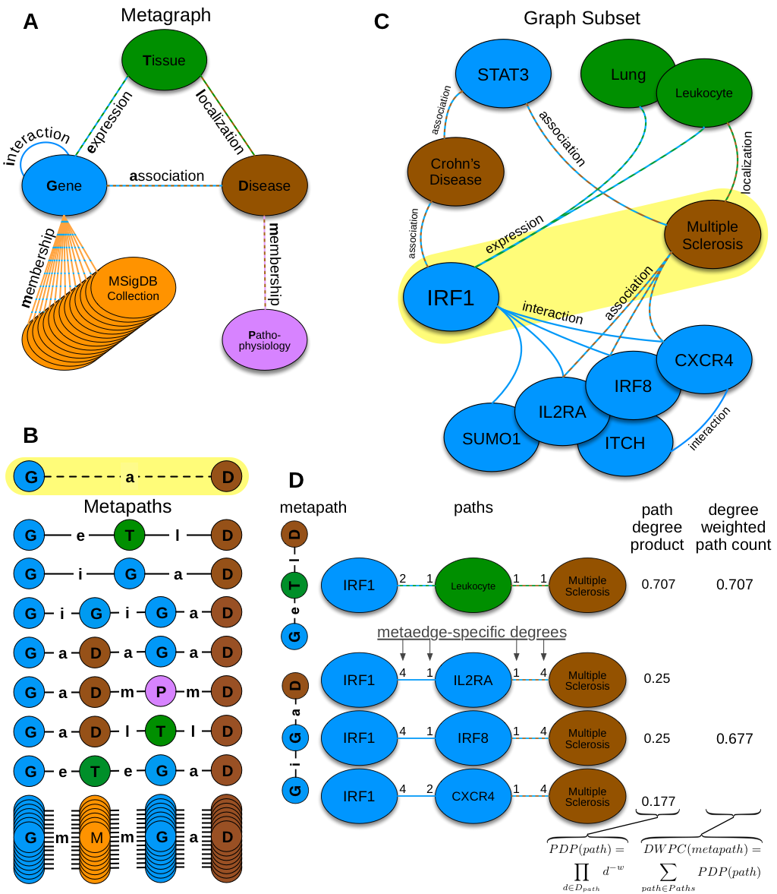

The goal of HNEP is to produce biologically-meaningful predictions by integrating multiple high-throughput data sources. The approach computes features describing the network topology connecting two nodes. These features are used as input to a machine learning method which predicts the probability that an edge exists.
We adapted an alorithm originally developed for social network analysis called PathPredict [pdf, doi]. Our extensions to this method focused on scalability and performance.
Here we show the process of calculating features that describe the network topology between two nodes. Features are used as predictors for subsequent modeling.
